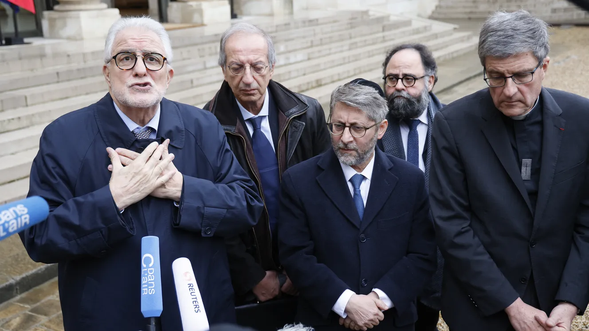

Actualités
Voici les dernières actualités de Marseille...
"L'antisémitisme ne passera pas par les mosquées", estime le recteur de la Grande mosquée de Paris après avoir rencontré Emmanuel Macron

Emmanuel Macron a reçu les représentants des cultes de toutes confessions lundi matin à l'Elysée.
Le président Emmanuel Macron a reçu, lundi 13 novembre, les représentants des cultes à l'Elysée, au lendemain des manifestations contre l'antisémitisme et après avoir lancé lui-même un appel à l'unité du pays dans une lettre aux Français. "L'antisémitisme ne passera pas par les mosquées", a notamment estimé le recteur de la Grande mosquée de Paris à la sortie de cette rencontre. "Au lieu de faire de cette manifestation une lutte contre l’antisémitisme, il aurait fallu faire une lutte contre le racisme", a ajouté Chems-Eddine Hafiz. Suivez notre direct.
Une réunion à l'Elyée avec toutes les confessions.
Emmanuel Macron et le ministre de l'Intérieur ont reçu le président de l'Union bouddhiste de France, le président de la Confédération des évêques de France, le président du Consistoire central israélite, le Grand rabbin de France, le recteur de la Grande mosquée de Paris, le président de l'Union des mosquées de France, le président de l'Assemblée des évêques orthodoxes de France et le président de la Fédération protestante de France.
Plus de 300 enquêtes pour actes antisémites et apologie du terrorisme.
Un total de 330 enquêtes ont été ouvertes en France par la justice pour actes antisémites et apologie du terrorisme depuis l'attaque du Hamas sur Israël survenue le 7 octobre, a annoncé lundi le ministère de la Justice auprès de l'AFP.
Une importante mobilisation.
Environ 105 000 personnes à Paris, et au total 182 000 dans toute la France, ont manifesté dimanche pour afficher leur rejet de l'antisémitisme face à l'explosion du nombre d'actes hostiles aux juifs depuis le début de la guerre entre Israël et le Hamas le 7 octobre.
Une absence remarquée.
Sur RTL, le président du Rassemblement national Jordan Bardella a regretté l'absence d'Emmanuel Macron à la grande marche contre l'antisémitisme à Paris, jugeant que le chef de l'Etat avait "raté un rendez-vous avec l'histoire".